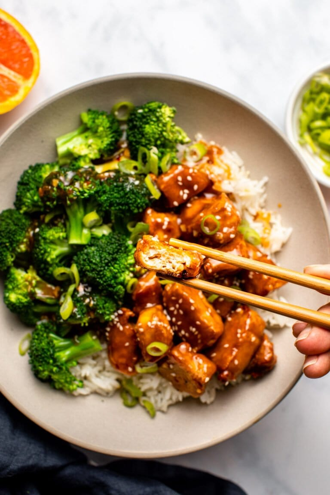

Orange Tofu

Description
Delicious vegan alternative to the popular Orange Chicken dish.
Ingredients
Tofu
Cornstarch
Orange Juice
Orange Zest
Steps
Chop up tofu
Dip in flour/cornstarch mix
Fry tofu until crispy
Dip in magic orange sauce